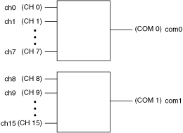
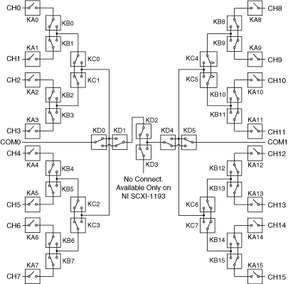

The following figure represents the NI PXI/PXIe-2593 (NI 2593) dual 8×1 multiplexer topology.
|  |
|
The following figure shows the reset position of the NI 2593 in the dual 8×1 multiplexer topology. The reset position is the power-on configuration of the module.

The NI 2593 in this topology contains two banks of eight input channels connected to a common channel. These input channels are referred to as ch<0..15>, and the two common channels are referred to as com0 and com1. You can only connect to the common channel that is in the same bank. The banks are organized as follows:
| Input Channels | Common Channel |
|---|---|
| ch0, ch1, ch2, ch3, ch4, ch5, ch6, ch7 | com0 |
| ch8, ch9, ch10, ch11, ch12, ch13, ch14, ch15 | com1 |
For example, you can connect ch7 to com0; however, you cannot connect ch7 to com1 in this topology.
You can connect the channels of the NI 2593 using the niSwitch Connect Channels VI or the niSwitch_Connect function. For example, to connect channel 15 to common 1, call the niSwitch Connect Channels VI or the niSwitch_Connect function with the channel 1 parameter set to ch15 and the Channel 2 parameter set to com1.
When scanning the NI 2593, a typical scan list entry could be ch2->com0;. This entry routes the signal from ch2 to com0.